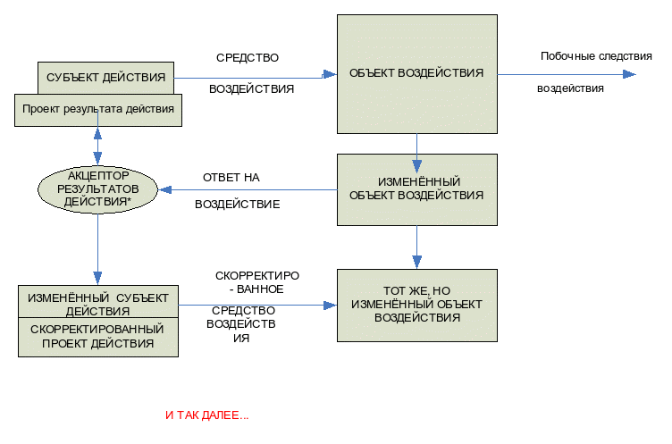

|
|
|
|

|
|
|
|
|
|
|
||||||||
|
||||||||||||||||||
По материалам выступления Дмитрия Бродского в Клубе «Вольнодумец» 4 апреля 2007 года в Музее и общественном центре им. Андрея Сахарова в рамках дискуссии между сторонниками коммунистического и демократического направления по теме:
«Сопутствует ли техническому прогрессу нравственное развитие человека?»
Я попробую переформулировать тему дискуссии таким образом:
Начну с основных выводов своих рассуждений и построений на предложенную тему.
Определённая корреляция между техническим и этическим совершенствованием Человечества в его истории существует.
Применительно к отдельному человеку такая связь обнаруживает себя в том, что человеческий индивид в детстве этически совершенствуется на основе опыта взаимодействия с людьми, а также с предметами. При этом большая часть последних представляет собой технические средства удовлетворения человеческих потребностей.
На стадии самоформирования (становления) индивида в подростковом и юношеском возрасте совершенствование происходит путём выбора им:
- мотива использования технических средств или
- мотива создания того или иного технического средства.
Стадия этического совершенствования, которую достигает данный человек, идентифицируется по тому, какие достижения технического прогресса он выбирает для себя как наиболее привлекательные и в каких целях их использует.
Итак, попытаемся аргументировать ответы на основной вопрос:
Прослеживается ли корреляция между техническим и этическим совершенствованием человека? и другие вопросы, ему сопутствующие.
Например, такие:
1) «Если такая связь есть, то, каково соподчинениеэтих процессов: или техническоесовершенствование порождает этическое, или этическое порождает техническое, или они взаимно обуславливают друг друга?»
2) «Каковастепень (как выражаются специалисты по теории систем) «тесноты корреляции» между этическим и техническим совершенствованием?». Но это уже предмет для отдельного исследования.
Но чтобы рассуждать о таких материях, необходимо определиться:
« Что такое само это техническое совершенствование и само это этическое совершенствование?»
Я считаю, что техническое совершенствование - это совершенствование орудийных средств (подчёркиваю - средств) воздействия социального субъекта (человека или человеческого сообщества) на их среду обитания: на природу и общество.
И всё, и более ничего.
Далее же возникает вопрос о целях воздействия и смысле осуществления этого воздействия.
За создание средств воздействия на мир отвечает сознание человека.
Руководствуясь сознанием, человек:
а) познаёт тот или иной фрагмент объективной реальности;
(объективная реальность - это материальная составляющая мира, существующая независимо от чьего-либо представления о нём).
Далее, на основании полученных знаний о познанном фрагменте объективной реальности субъект:
б) разрабатывает проекты технических средств воздействия на мир;
в) изготавливает опытные модели этих спроектированных средств;
г) апробирует их на экспериментальных площадках и, если они дают ожидаемый положительный эффект,
д) внедряет их в повседневную практику.
Этими средствами воздействия на мир могут быть как агрегации (разные приспособления) и квазисистемы ( машины), так и технологии (то есть организационные средства производства чего-либо: или вещей, или людей, или услуг, или идей).
Но словосочетание «технические средства» предполагает не только технические средства созидания (те же тракторы) и технологии созидания (например, технологии выработки электричества), но и технические средства разрушения (те же танки) и технологии разрушения (к примеру, технологии взрывов).
В свою очередь и средства созидания, и средства разрушения могут быть почти на равных использованы не только в конструктивных, но и деструктивных целях. То есть, возможны варианты. Например, средства разрушения используются в конструктивных целях (те же танки могут быть использованы как тягачи), а средства созидания - в деструктивных (те же трактора могут быть использованы, как средства убийства мирных жителей и разрушения их жилищ).
Более того: последствия внедрения практически любого (формально или фактически деструктивного или конструктивного) средства воздействия, помимо прямого ожидаемого эффекта, могут дать непредсказуемый побочный или конструктивный, или деструктивный эффект, в том числе и для субъектов планирования и создания этого средства. Так создание легкового автомобиля на бензиновом топливе, помимо положительных результатов имеет и плачевные последствия: резкое увеличение гибели людей (водителей и пешеходов) на дорогах, увеличение смертности от отравления выхлопными газами и роста раковых заболеваний.
Но это уже другая проблема…
Мы же вернёмся к целям и смыслам воздействия на мир.
Если в организационном триединстве любой деятельности «средство» отвечает на вопрос: «Как?», то постановка цели отвечает на вопросы: « Куда?», а выяснение «смысла» - на вопрос: «Зачем?»
Предложенное организационное триединство универсально, то есть применимо к любой деятельности по созданию технических и технологических средств созидания и разрушения.
Более того, это триединство цели, средства и смысла универсально вообще для любой деятельности животных организмов и их сообществ.
Под «смыслом», применительно к животным, я имею в виду не осознанный, а биологический (объективный) смысл.
Здесь же нас интересует сознательная организация деятельности.
Но сущность человека не исчерпывается его сознанием как отрефлексированным знанием о предмете деятельности.
Как писал философ Спиркин в своей книге «Сознание и самосознание» - «сознание существует в двуединстве собственно сознания и самосознания».
А что такое самосознание? Это знание человеческого индивидуума о своём сознании и подсознании, то есть высшая степень субъективности. Именно самосознание дает человеку отчёт о нём самом, о его познавательной и практической деятельности. И не только о том, что человек делает (обстоятельство цели), и как он это делает (обстоятельство средства), но и зачем он это делает в экзистенциальном, то есть в высшем для данного индивида смысле. То есть самосознание дает разумному субъекту отчёт о смысле своей деятельности и самой жизни.
Но каждый человек в его субъективной дискретности обладает своим, в той или иной мере, осознанным высшим началом, которое направляет его деятельность - то есть этическим ценностным содержанием.
И вот здесь я утверждаю, что этим высшим, и в этом смысле - этическим, началом для любого человеческого индивидуума служит ведущая для него, одна из возможных основных потребностей. На основе такой шкалы американского психолога Абрама Маслова, я разработал свою шкалу основных потребностей. В отличие от масловской, 5-ти уровневой иерархии (физиологическая потребность, потребность в безопасности, потребность впринадлежности, потребность в уважении, потребность самоактуализации), я предлагаю 9 - ти уровневую.
Таблица потребностей первого порядка (по Д.Бродскому)
|
1. Витальные потребности |
Потребность существования |
|
2. |
Потребность уверенного существования |
|
3 |
Потребность благополучного существования |
|
4. Социальные потребности |
Потребность совместного существования |
|
5. |
Потребность значимого существования |
|
6. |
Потребность самостоятельного существования |
|
7. Личностные потребности |
Потребность реализованного существования |
|
8. |
Потребность целостного существования |
|
9. |
Потребность бесконечного существования |
Потенциально любой средний представитель Homo sapiens может в процессе своего индивидуального совершенствования достичь высшей потребности. Но на практике тех, кто достиг высших потребностей (потребность реализованного существования, потребность целостного существования, потребность бесконечного существования) - пока очень мало (по России оценочно - менее 10%), так же, как мало и особо социально депривированных, то есть тех, кому в результате тяжёлых лишений материального или эмоционального плана в младенческом и детском возрасте удалось освоить лишь самые элементарные потребности: потребность существования и потребность уверенного существования.
Мне представляется, что основная масса населения Земного шара в настоящее время, в процессе совершенствования, освоила лишь среднюю зону шкалы основных потребностей, причём со смещением к более простым социальным потребностям - потребности совместного и потребности значимого существования.
Вот теперь, после довольно пространного описания своих представлений и понятий, соответствующих заявленной теме, мне будет легко ответить по существу заявленного вопроса.
Исходя из предположения, что шкала совершенствования основных потребностей отражает реальность и соответствует как наращиванию этического качества человечества в историческом плане, так и ходу индивидуального совершенствования человека, я склонен полагать, что наличие определённой причинно-следственной связи этической и технической линий прогресса существует.
При этом этический прогресс порождает новые технические задачи (технический прогресс), а технический прогресс, в свою очередь,ставит перед человеком и человечеством всё новые этические проблемы.
Таким образом, применительно к общественной материи справедлив субъект-объектный принцип детерминации событий, а отсюда и процессов.
Правда эта детерминация не обладает безусловной жесткостью. Это обусловлено тем, что сознание и самосознание человеческого индивида (особенно достигшего высших потребностей) принципиально вариативно и выбор его действий зависит от многих факторов.
Рассмотрим приблизительную схему взаимодействия субъекта деятельности (Сд) и внешнего мира (объекта деятельности).
(тенденция протекания процесса представлена сверху вниз):

* акцептор результатов действия - механизм, позволяющий сравнить задуманное и то, что из этого получилось, для дальнейшей корректировки действий «субъекта действий».
Из схемы видно, что необходимость выработки нового плана действий ставит перед субъектом необходимость этического выбора, поскольку ставит задачу выбора средств.
В принципе человеческий индивид всегда имеет возможность сделать выбор цели и средств её достижения. Но это в принципе.
В действительности человек ограничен в своём выборе. Эти ограничения накладывает интериоризированный (то есть, переформатированный из объективного в субъективный (психический) план) опыт ювенальных (прежде всего времён детства) отношений человека с другими людьми и через них с общественными организациями и институтами.
Таким образом, как я предполагаю, у каждого человеческого индивидуума к моменту полового созревания формируется некое его неизменное ядро, некая мировоззренческая аксиома, из которой он и исходит в своей единичной проекции на мир, чтобы он ни делал: учился ли, работал, развлекался или проявлял себя в общественной жизни.
Поэтому, лишь по своей наивности многие люди полагают, что все люди способны понять друг друга. Это свойство - «судить по себе» - характеризует подростковый характер.
Теперь конкретизируем задачу.
Предположим, что высшей для субъекта целью, то есть смыслом существования некогосубъекта, служит само желание жить.
Само собой, что ему будут нужны элементарные средства добычи средств существования - что под руку подвернётся.
а) обстоятельств сосуществования с другими людьми и
б) своих индивидуальных качеств, соответствующих стремлению к достижению высших потребностей, которых он достиг, и
в) достигнутого научно-технического прогресса, которым он может воспользоваться.
Обратная же связь техники и этики на данном самом примитивном уровне шкалы потребностей заключается в том, что в случае совершенствования технических средств воздействия расширяются возможности добычи средств существования, но возникают и новые проблемы.
Так в истории Человечества со сменой технологий собирательства на технологии охоты возникла возможность не думать о ежечасном поиске пищи, так как возникли более надежные средства добычи средств существования. Смягчились и отношения между членами племени, так как животного белка стало хватать и на беспомощных членов общины. Думаю, что людоедство перестало быть обыденностью. И в этом я вижу благоприятное влияние технического и технологического прогресса на этику в сообществе людей.
Но эти изменения вызвали также необходимость совершенствовать средства хранения средств существования, средства защиты сохраняемого и превентивного нападения.
Между тем, члены племени привыкали к обильному питанию и к надёжности в защите от врагов. И в дальнейшем, когда в результате разрастания населения или по другим причинам начинались сбои даже при использовании новых технических средств добычи средств существования, их хранении и борьбы с врагами, новая потребность - уверенность существования становилась для людей актуальной, приобретая черты социокультурной ценности.
С изобретением технологий применения огня в процессе охоты также возникали новые проблемы - как хранения обильно добытого мяса, так и распределения его, а так же перспектив сохранения ресурсов.
Эти новые проблемы требовали, во всяком случае, прагматического, а по большому счёту - и этического выбора.
В целом, в исторической перспективе, потребность уверенного существования мотивирует создание технических средств и технологий колоссального диапазона: от щитов - до ядерных щитов, от дротиков - до антиантиракет, от устройств для хранения добычи у дикарей - до сложных систем хранения и распределения продукции в саморегулирующейся системе мирового рынка.
Но она же, эта потребность, подвигает человека изготавливать ритуальные предметы и наряды и даже возводить культовые сооружения, подбадривающие человека произведения искусства.
Следующий этап. Возможность его наступления обусловлена освоением технологий натурального производства (скотоводства и земледелия). Эти технологии создают не только предпосылки для осёдлого образа жизни, но и как его следствия - социо-культурного комфорта. Субъекта - носителя новой потребности - интересует не только само элементарное выживание (здесь и сейчас) и гарантии безопасности, но и гармония взаимодействия с миром. Тогда мы имеем дело с потребностьюблагополучного существования. Тут уже для обеспечения удовлетворения потребностей в удобстве, красоте, гастрономической и пр. изысканностей, будут востребованы и высокое техническое мастерство, и искусство. А они, в свою очередь, требуют нового витка технического совершенствования.
Судите сами…
Потребность благополучного существования диктует индивиду или сообществу соответственно мотивированных индивидуумов создание своих технических средств: от развлекательных и познавательных игрушек до средств индивидуального и массового комфорта, удовлетворяющих утонченным эстетическим и эмоциональным вкусам. Безусловно, представление о комфорте и изысканности у разных людей может бесконечно отличаться. Общее для всех любителей «сладкой» или «красивой» жизни заключается в стремлении достичь предельных мыслимых высот гармонии с культурой того или иного общества и через неё - с природой и людьми.
В данном случае ценность представляет не только источник витаминов или сохранность продукта, но изысканность вкуса блюд, форм, переживаний.
Что до этической составляющей, то технический прогресс здесь позволил обществу окончательно прекратить такую «невинную» практику, как рутинный каннибализм. Трудоёмкое производство сельскохозяйственной продукции вызвало большую необходимость в трудовых ресурсах, что повысило ценность отдельного человека, так как его производительные возможности были оценены значительно выше, чем его печёнка. А в последующем технический прогресс привёл к тому, что прекратилась даже практика человеческих жертвоприношений. Кстати, известный крупный рабовладелец Аристотель уже предвидел, что, когда весь общественно-полезный труд будет заменен машинами, не понадобятся усилия «говорящих орудий» (его термин).
Я бы и далее проследил процесс корреляции технического и этического прогресса, но это не входит в мою задачу. Я надеюсь, что те, кто способен понять, уже поняли ход моих рассуждений. Те же, кто не понял - не поймут никогда. Как говорила Зинаида Гиппиус: «Если нужно объяснять, значит не нужно объяснять!». Я бы только добавил в её формулу пред словом «объяснять» одно слово - «много».
И последнее, что мне хотелось отметить в этом разделе.
Практика осуществления коммунистической идеологии показала, что коммунизм - это возврат общества от его «открытого» (способного удовлетворять высшие социальные и личностные потребности) состояния, в состояние «закрытости», где нет места высшим, личностным потребностям. Высшими потребностями коммунисты декларируют потребность совместного и значимого существования. На практике эта декларация служит скорее прикрытием для коммунистической элиты (которая непременно «нарисуется»), и которая руководствуется потребностями ещё более приземленными - уверенного и благополучного существования.
В результате, коммунисты обеспечивают свое господство культивированием возрожденного государственного рабовладения.
Итак, напомню те цели, к достижению которых субъект может стремиться в зависимости от сложности ведущей для него основной потребности.
(перечисляю цели от простых к сложным):
1. Получение средств существования, необходимых для поддержания жизни - белков, жиров, углеводов, минералов, воды и т.п. (достижение характеризуется чувством покоя);
2. Получение средствзащиты средств существования - оружия, доспехов, жилищ, транспорта и т.п. (достижение характеризуется чувством безмятежности);
3. Получение средств достижения благополучного существования -
комфортабельное жильё, транспорт, загородные апартаменты, украшения, зрелища, спортивные сооружения и оборудование и другие удобства (характеризуется переживаниями чувственного и эстетического наслаждения, эмоциями радости);
4. Получение средств достижения совместного существования - бесперебойных коммуникаций, органов воспитания и образования (яслей, садов, школ), административных органов, мест досуга и знакомств, технических и административных средств дистанционного общения и т.п.
(характеризуется чувством счастья);
5. Получение средств достижения значимого существования (залов заседаний и аудиторий, театральных площадок и научных лабораторий, совершенствования приборов, музыкальных инструментов, других средств достижения высот человеческого таланта, улучшение магистралей и транспорта для ускорения быстрого и безопасного перемещения в пространстве и т.п.).
(Характеризуется чувством гордости за причастность к престижным (в понимании субъекта) референтным группам);
6. Получение средств достижения свободного (социально независимого) существования. Прежде всего, это средства экономической и юридической государственной защиты: целые социальные институции - технически оснащенные полицейские участки, органы дознания и судопроизводства, журналисты, и политики, оснащённые новейшей техникой (то есть всё то, что обладает возможностью и силами поддерживать в стране баланс интересов всех слоёв общества). А для контроля за честным ведением избирательных компаний нужны всё более безупречные средства фиксации и контроля за ходом выборов.
(Характеризуется чувством человеческого достоинства);
7. Получение средств удовлетворения потребностей реализованного существования. Это все информационные и технические возможности для образования и реализации человеком своих творческих (конструктивных) задатков в любой области деятельности. (Характеризуется чувством восторга и счастья от осознания своих творческих прорывов в соответствующих областях деятельности).
8. Получение средств удовлетворения потребностей цельного (непротиворечивого) существования. Это требует обеспеченности объективными (от правовых до технических) возможностями для любого «мыслимого» углубления в тему выбранного направления деятельности.
(Удовлетворение выражается чувством интеллектуально-нравственной сосредоточенности перед лицом поставленной задачи);
9. Получение средств удовлетворения потребностей бесконечного существования - это и средства защиты всего Человечества (например, системы противоракетной обороны - ПРО), и средства исследования Космоса на предмет постижения сущности Бытия, и в том числе Человека, как его части. (Надежда на удовлетворение этой потребности характеризуется спокойствием (чувством умиротворения) перед лицом конечности собственной личности).
Этическое совершенствование человека - это результат процесса производства и распределения (перечисляю от простых к сложным):
средств удовлетворения потребностей существования (цель - поддержка жизни, обмена веществ, средств существования),
средств удовлетворения потребностей уверенного существования (цель - получение средств защиты),
средств удовлетворения потребности благополучного существования,
средств удовлетворения потребностей совместного существования,
средств удовлетворения потребностей значимого существования,
средств удовлетворения потребностей свободного (социально независимого) существования,
средств удовлетворения потребностей реализованного существования,
средств удовлетворения потребностей цельного (непротиворечивого) существования,
средств удовлетворения потребностей бесконечного существования.
Усложнение процесса общественного производства и распределения перечисленных средств, происходит на пути демократизации их производства и распределения.
Для успешной демократизации общества требуется все усложняющееся, по сути, и упрощающееся в управлении техническое и технологическое обеспечение. Всё это обеспечивается в странах, идущих по пути частной и коллективной производственной инициативы.
А теперь попробую вкратце ответить на вопросы: Каким образом применяемое или изготавливаемое техническое средство может тестировать человека (с точки зрения его этического уровня) и даже совершенствовать его?
Напомню, что техническое средство - это (наряду с органо-соматическими и социально-психическими) одно из применяемых средств воздействия на мир.
Характер технических средств может наиболее наглядно тестировать их создателя или пользователя: его взгляды, этическое состояние, но может помочь и в самотестировании человека в его самосовершенствовании.
Возьмём в качестве примера судьбу Андрея Дмитриевича Сахарова.
Он был одним из создателей ядерного оружия. Но когда он разрабатывал теоретическое и техническое обоснование для изготовления «изделия», он руководствовался коммунистической идеологией, соответствующей общечеловеческому представлению об удовлетворении потребности совместного существования. Посему, он полагал, что этим защищает СССР, как оплот строительства коммунизма на Земном заре, от происков «империалистов» - оплота мира эксплуатации человека человеком.
Тысячи людей в СССР занимались созданием данного оружия, но только у единиц среди советских людей, и среди них у А.Д.Сахарова, возникло беспокойство о деструктивных последствиях воздействия этого оружия на всю биосферу Земли и тревога за судьбу всего Человечества.
Именно экзистенциальная тревога заставила А.Д Сахарова по-новому взглянуть на общество, в котором он жил, и на которое работал.
В результате, мы видим нравственное перерождение А.Д.Сахарова.
И ему было легко это сделать - в том смысле легко, что он не связывал удовлетворение своей потребности значимого существования (которая у него, несомненно, была) с каким-либо одним народом или государством (он уже был в своём самосознании человеком Земли, то есть обладал общечеловеческим самосознанием). Он не гипертрофировал и другие (более высокие, чем потребность совместного существования, потребности), вполне осознавая себя свободной (нравственно), а также реализующейся и цельной личностью.
Его беспокоило то, что его вклад (так же, как и вклад всех конструктивных сил Человечества) в общую копилку знаний может оказаться обесцененным, в случае если под гипнозом примитивных мотивов люди истребят друг друга.
Итак, миро- и правозащитная деятельность Андрея Дмитриевича Сахарова в последние десятилетия его жизни была продиктована высшей потребностью человека - потребностью бесконечного существования в понимании человека с материалистическими взглядами.
Москва. Апрель- май 2007 год.